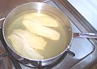

Fish Page
Making Court Bouillon

Poaching fillets
Fish Poacher
Fish are generally poached in a Court Bouillon (say "Booyon"). Court means "short" in French, implying the bouillon contains herbs and vegetables only - no meat. The court bouillons listed here are all excellent and well tested. The #2 East Asia is definitely worth trying, fitting well with increasingly popular "fusion" cuisines.
For poaching a whole fish (except very deep bodied fish like Pomfret and Pompano) a fish poaching pan like the one shown is ideal. You could improvise with an oval roasting pan but it'd take even more poaching liquid. Even with the poaching pan a lot of liquid is needed so an economical court bouillon like #3 is a good idea - #1 would need a whole bottle of white wine which you might rather be drinking.
The method outline here is deep poaching where the fish is submerged and the liquid is discarded after use. Another method of "poaching" fish in "court bouillon" uses relatively shallow liquid with both liquid and vegetables served as a sauce with the fish. Creole Catfish in Court Bouillon is an example, but this method is also used in France.
Fish suitable for poaching: Bass, Cod, Haddock, Halibut,
Pomfret, Pompano, Salmon, Snapper, Sole, Tilapia, Trout, Turbot.
Matter of Opinion: Catfish - some people just don't
like poached catfish, but I have no objection to it at all.
Not so good for poaching: Shark, Mackerel, Tuna.
Court Bouillon Recipes
#1 is the classic French poach but my favorites are #4 with Red Wine and #2 East Asia (very tasty, compatible with Western sauces, and economical), but for simplicity and economy, no other can match #5.
A half recipe or a little more is sufficient for thin filets in a 2 quart saute pan. For a whole fish in an 18 inch fish poacher you will need about a double recipe. With Court Bouillon #1 you'd have a whole bottle of wine invested so you probably want a fish about 16 inches long weighing around 2 pounds to make it worthwhile - or use the #3 with vinegar, or #5.